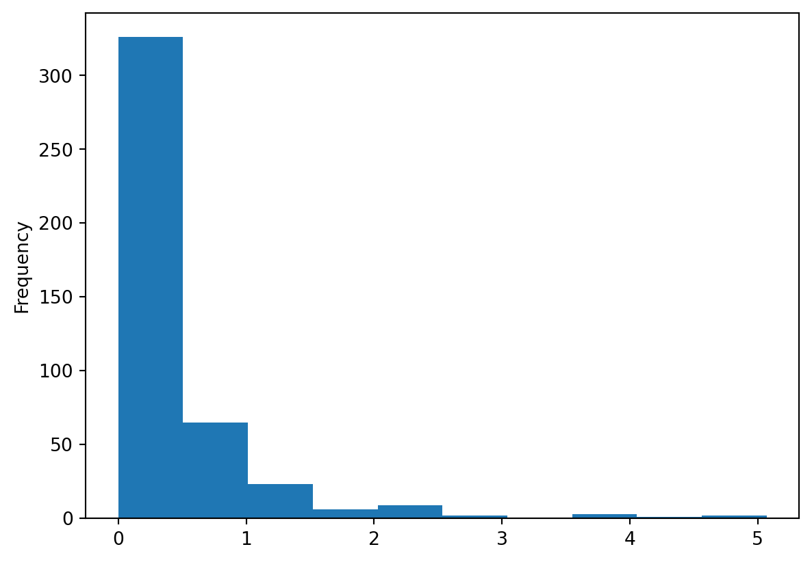
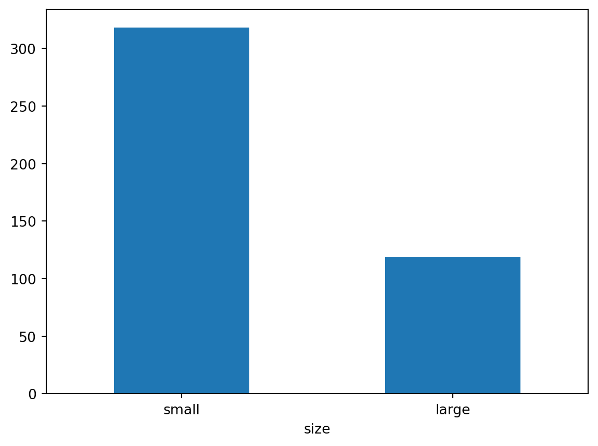

import pandas as pd
df = pd.DataFrame({
"col1": [1, 2, 3]
})다음 표의 내용을 데이터 프레임으로 만들어 출력해 보세요.
다음 표의 내용을 데이터 프레임으로 만들어 출력해보세요.
import pandas as pd
df = pd.DataFrame({
"product" : ["사과", "딸기", "수박"],
"price" : [1800, 1500, 3000],
"volume" : [24, 38, 13]
})
df| product | price | volume | |
|---|---|---|---|
| 0 | 사과 | 1800 | 24 |
| 1 | 딸기 | 1500 | 38 |
| 2 | 수박 | 3000 | 13 |
##앞에서 만든 데이터 프레임을 이용해 과일의 가격 평균과 판매량 평균을 구해보세요.
import pandas as pd
df = pd.DataFrame({
"product" : ["사과", "딸기", "수박"],
"price" : [1800, 1500, 3000],
"volume" : [24, 38, 13]
})
df
df_mean =sum(df["price"]) / 3
df_mean 2100.0과일 가격의 평균은 2100 원이다.
import pandas as pd
df = pd.DataFrame({
"product" : ["사과", "딸기", "수박"],
"price" : [1800, 1500, 3000],
"volume" : [24, 38, 13]
})
df
df_mean_v = sum(df["volume"]) /3
df_mean_v25.0과일의 판매량 평균은 25이다.
p115 mpg데이터를 이용해 분석문제 해결하기
Q1. mpg데이터를 불러와 복사본을 만드세요.
import pandas as pd
df = pd.read_csv('mpg.csv')
df_new = df.copy()
df_new| manufacturer | model | displ | year | cyl | trans | drv | cty | hwy | fl | category | |
|---|---|---|---|---|---|---|---|---|---|---|---|
| 0 | audi | a4 | 1.8 | 1999 | 4 | auto(l5) | f | 18 | 29 | p | compact |
| 1 | audi | a4 | 1.8 | 1999 | 4 | manual(m5) | f | 21 | 29 | p | compact |
| 2 | audi | a4 | 2.0 | 2008 | 4 | manual(m6) | f | 20 | 31 | p | compact |
| 3 | audi | a4 | 2.0 | 2008 | 4 | auto(av) | f | 21 | 30 | p | compact |
| 4 | audi | a4 | 2.8 | 1999 | 6 | auto(l5) | f | 16 | 26 | p | compact |
| ... | ... | ... | ... | ... | ... | ... | ... | ... | ... | ... | ... |
| 229 | volkswagen | passat | 2.0 | 2008 | 4 | auto(s6) | f | 19 | 28 | p | midsize |
| 230 | volkswagen | passat | 2.0 | 2008 | 4 | manual(m6) | f | 21 | 29 | p | midsize |
| 231 | volkswagen | passat | 2.8 | 1999 | 6 | auto(l5) | f | 16 | 26 | p | midsize |
| 232 | volkswagen | passat | 2.8 | 1999 | 6 | manual(m5) | f | 18 | 26 | p | midsize |
| 233 | volkswagen | passat | 3.6 | 2008 | 6 | auto(s6) | f | 17 | 26 | p | midsize |
234 rows × 11 columns
Q2, 복사본 데이터를 이용해 cty는 city로, hwy는 highway로 수정하세요.
import pandas as pd
df = pd.read_csv('mpg.csv')
df_new = df.copy()
df_new
df_new = df_new.rename(columns = {'cty' : 'city'})
df_new = df_new.rename(columns = {'hwy' : 'highway'})
df_new| manufacturer | model | displ | year | cyl | trans | drv | city | highway | fl | category | |
|---|---|---|---|---|---|---|---|---|---|---|---|
| 0 | audi | a4 | 1.8 | 1999 | 4 | auto(l5) | f | 18 | 29 | p | compact |
| 1 | audi | a4 | 1.8 | 1999 | 4 | manual(m5) | f | 21 | 29 | p | compact |
| 2 | audi | a4 | 2.0 | 2008 | 4 | manual(m6) | f | 20 | 31 | p | compact |
| 3 | audi | a4 | 2.0 | 2008 | 4 | auto(av) | f | 21 | 30 | p | compact |
| 4 | audi | a4 | 2.8 | 1999 | 6 | auto(l5) | f | 16 | 26 | p | compact |
| ... | ... | ... | ... | ... | ... | ... | ... | ... | ... | ... | ... |
| 229 | volkswagen | passat | 2.0 | 2008 | 4 | auto(s6) | f | 19 | 28 | p | midsize |
| 230 | volkswagen | passat | 2.0 | 2008 | 4 | manual(m6) | f | 21 | 29 | p | midsize |
| 231 | volkswagen | passat | 2.8 | 1999 | 6 | auto(l5) | f | 16 | 26 | p | midsize |
| 232 | volkswagen | passat | 2.8 | 1999 | 6 | manual(m5) | f | 18 | 26 | p | midsize |
| 233 | volkswagen | passat | 3.6 | 2008 | 6 | auto(s6) | f | 17 | 26 | p | midsize |
234 rows × 11 columns
Q3. 데이터 일부를 출력해 변수명이 바뀌었는지 확인해보세요. 다음과 같은 결과물이 출력되어야 합니다.
import pandas as pd
df = pd.read_csv('mpg.csv')
df_new = df.copy()
df_new
df_new = df_new.rename(columns = {'cty' : 'city'})
df_new = df_new.rename(columns = {'hwy' : 'highway'})
df_new
df_new[['city','highway']]| city | highway | |
|---|---|---|
| 0 | 18 | 29 |
| 1 | 21 | 29 |
| 2 | 20 | 31 |
| 3 | 21 | 30 |
| 4 | 16 | 26 |
| ... | ... | ... |
| 229 | 19 | 28 |
| 230 | 21 | 29 |
| 231 | 16 | 26 |
| 232 | 18 | 26 |
| 233 | 17 | 26 |
234 rows × 2 columns
##p130 midwest.csv는 미국 동북중부(East North Central States) 437개 지역의 인구 통계 정보를 담고 있습니다. midwest.csv를 이용해 데이터 분석문제를 해결해 보세요.
Q1. midwesst.csv를 불러와 데이터의 특징을 파악하세요.
import pandas as pd
df = pd.read_csv('midwest.csv')
df.shape
df.info()<class 'pandas.core.frame.DataFrame'>
RangeIndex: 437 entries, 0 to 436
Data columns (total 28 columns):
# Column Non-Null Count Dtype
--- ------ -------------- -----
0 PID 437 non-null int64
1 county 437 non-null object
2 state 437 non-null object
3 area 437 non-null float64
4 poptotal 437 non-null int64
5 popdensity 437 non-null float64
6 popwhite 437 non-null int64
7 popblack 437 non-null int64
8 popamerindian 437 non-null int64
9 popasian 437 non-null int64
10 popother 437 non-null int64
11 percwhite 437 non-null float64
12 percblack 437 non-null float64
13 percamerindan 437 non-null float64
14 percasian 437 non-null float64
15 percother 437 non-null float64
16 popadults 437 non-null int64
17 perchsd 437 non-null float64
18 percollege 437 non-null float64
19 percprof 437 non-null float64
20 poppovertyknown 437 non-null int64
21 percpovertyknown 437 non-null float64
22 percbelowpoverty 437 non-null float64
23 percchildbelowpovert 437 non-null float64
24 percadultpoverty 437 non-null float64
25 percelderlypoverty 437 non-null float64
26 inmetro 437 non-null int64
27 category 437 non-null object
dtypes: float64(15), int64(10), object(3)
memory usage: 95.7+ KBQ2. poptotal(전체 인구) 변수를 total로, popasian(아시아 인구) 변수를 asian으로 수정하세요.
import pandas as pd
df = pd.read_csv('midwest.csv')
df
df_new = df.copy()
df_new = df_new.rename(columns = { 'poptotal':'total'})
df_new = df_new.rename(columns = { 'popasian':'asian'})
df_new
df_new[['total','asian']]| total | asian | |
|---|---|---|
| 0 | 66090 | 249 |
| 1 | 10626 | 48 |
| 2 | 14991 | 16 |
| 3 | 30806 | 150 |
| 4 | 5836 | 5 |
| ... | ... | ... |
| 432 | 304715 | 2699 |
| 433 | 46104 | 92 |
| 434 | 19385 | 43 |
| 435 | 140320 | 1728 |
| 436 | 73605 | 722 |
437 rows × 2 columns
Q3. total, asian변수를 이용해 ‘전체 인구 대비 아시아 인구 백분율’ 파생변수를 추가하고, 히스토그램을 만들어 분포를 살펴보세요
import pandas as pd
df = pd.read_csv('midwest.csv')
df
df_new = df.copy()
df_new = df_new.rename(columns = { 'poptotal':'total'})
df_new = df_new.rename(columns = { 'popasian':'asian'})
df_new
df_new['per'] =(df_new['asian']/df_new['total'])* 100
df_new
df_new['per'].plot.hist()
Q4. 아시아 인구 백분율 전체 평균을 구하고, 평균을 초과하면 ‘large’, 그 외에는 ’small’을 부여한 파생변수를 만들어 보세요.
import pandas as pd
import numpy as np
df = pd.read_csv('midwest.csv')
df
df_new = df.copy()
df_new = df_new.rename(columns = { 'poptotal':'total'})
df_new = df_new.rename(columns = { 'popasian':'asian'})
df_new
df_new['per'] =(df_new['asian']/df_new['total'])*100
df_new
df_new['per'].mean()
df_new['size'] = np.where(df_new['per'] > 0.4872, 'large', 'small' )
df_new['size']0 small
1 small
2 small
3 small
4 small
...
432 large
433 small
434 small
435 large
436 large
Name: size, Length: 437, dtype: objectQ5. ’large’와 ’small’에 해당하는 지역이 얼마나 많은지 빈도표와 빈도 막대 그래프를 만들어 확인해보세요.
import pandas as pd
import numpy as np
df = pd.read_csv('midwest.csv')
df
df_new = df.copy()
df_new = df_new.rename(columns = { 'poptotal':'total'})
df_new = df_new.rename(columns = { 'popasian':'asian'})
df_new
df_new['per'] =(df_new['asian']/df_new['total'])*100
df_new
df_new['per'].mean()
df_new['size'] = np.where(df_new['per'] > 0.4872, 'large', 'small' )
df_new['size']
count_test = df_new['size'].value_counts()
count_test.plot.bar(rot = 0)